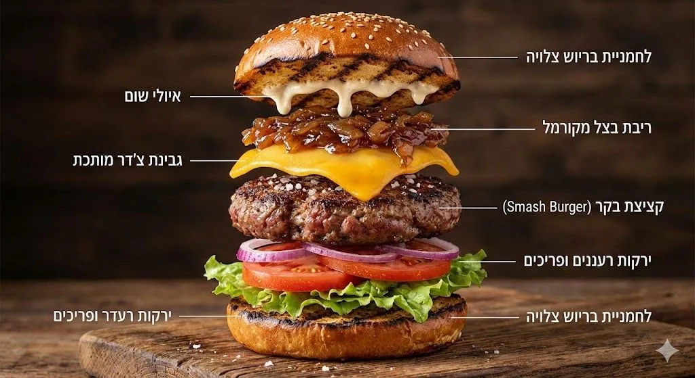

Exploded product visuals with Nano Banana Pro
Originally posted on LinkedIn, December 16, 2025.
Episode #10 of my Nano Banana Pro series covers exploded product visuals. When I ask the model to break an object into its components, it produces an image that looks like a photograph from a professional cookbook. Its handling of texture, lighting, and materials gets close to studio photography.
The model maintains enough spatial context to split a hamburger into layers while keeping every element in the right place. The result is a visual asset that explains a technical concept intuitively.
Here is the prompt I used:
Create an infographic of a hamburger broken down into layers, with every texture clearly visible, including a toasted bun, onion jam, and fresh vegetables.
The generated image showed the hamburger as a logical stack of separated ingredients, with clear textures and labels. The model sometimes glitches when generating Hebrew text, but most of the time it gets it right. Remove the text, or the cheese, and you can create ads for businesses with a single click.
Paste the prompt into Gemini and click the banana icon.
